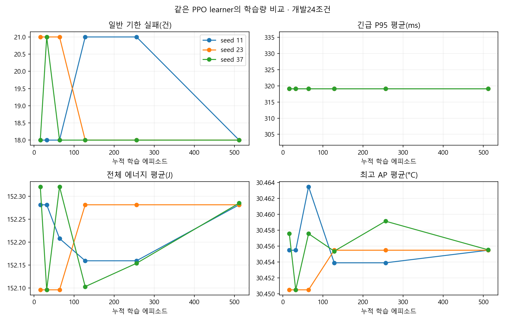
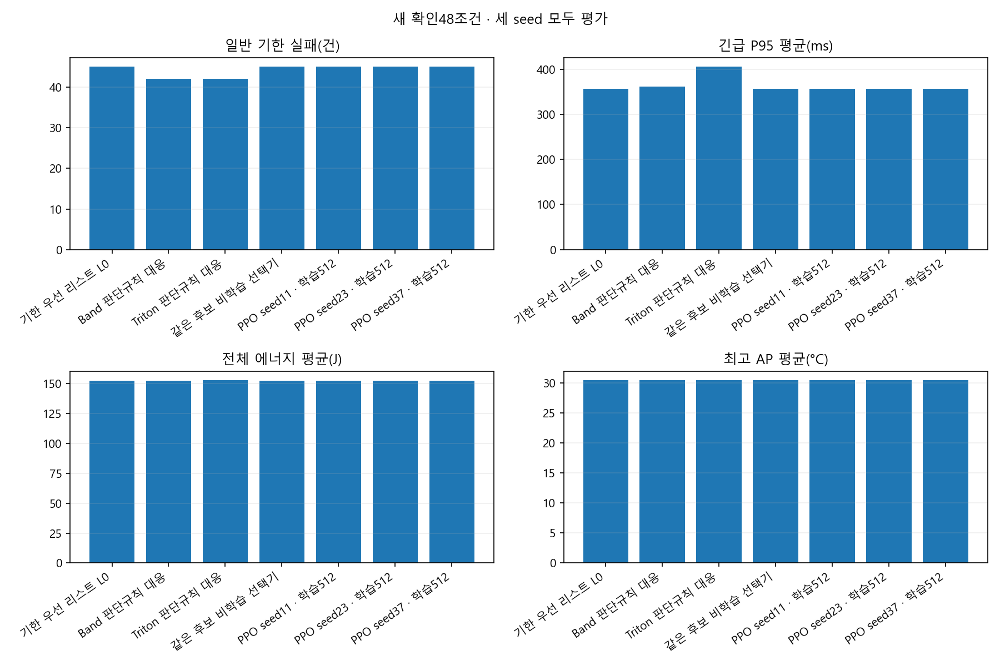
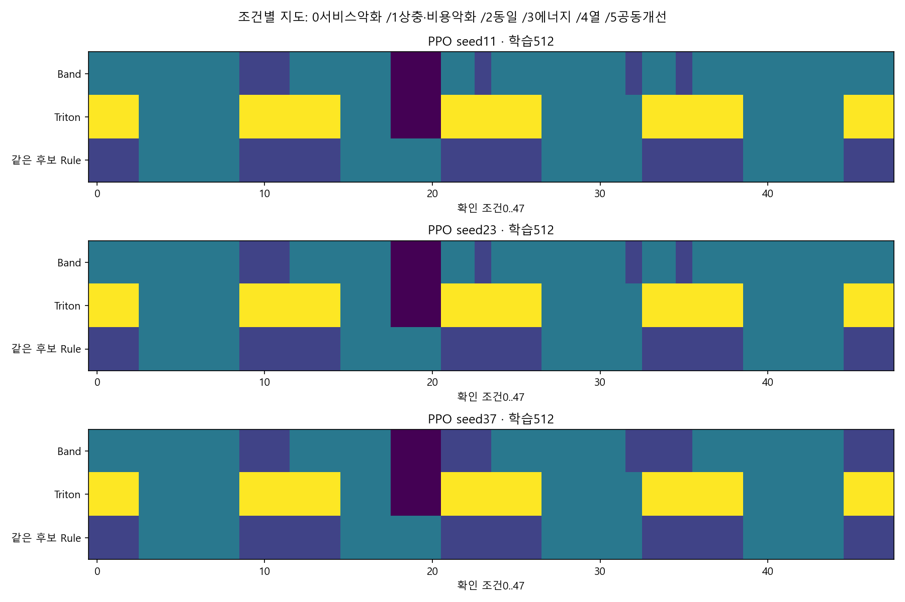
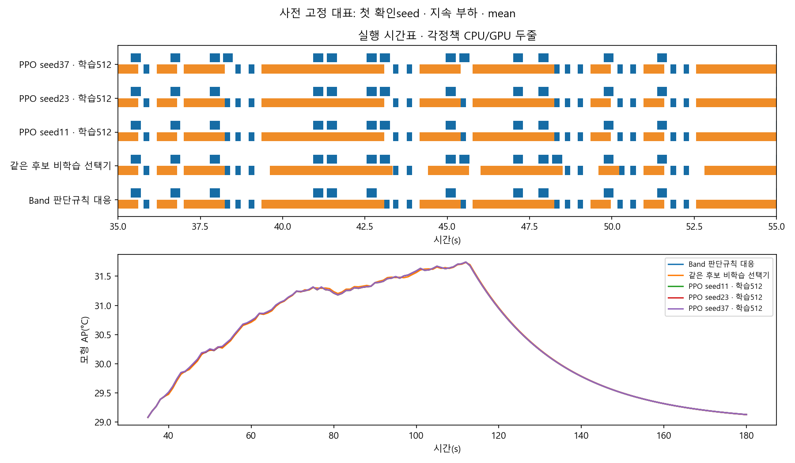
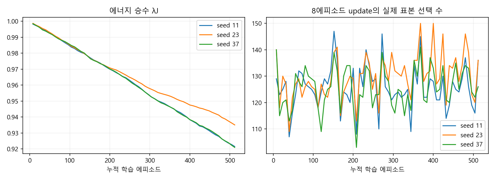

3seed · terminal32→64→128→256→512 · 추가학습1440 · 새확인48조건. 최고seed선택0·기기실행0.
| 정책 | 일반기한실패 | 긴급P95 평균ms | 평균J | 평균최고AP°C |
|---|---|---|---|---|
| 기한 우선 리스트 L0 | 45 | 356.273 | 152.348137 | 30.465906 |
| Band 판단규칙 대응 | 42 | 361.862 | 152.285040 | 30.463676 |
| Triton 판단규칙 대응 | 42 | 405.056 | 152.767088 | 30.482239 |
| 같은 후보 비학습 선택기 | 45 | 356.273 | 152.197866 | 30.456615 |
| PPO seed11 · 학습512 | 45 | 356.273 | 152.292797 | 30.463565 |
| PPO seed23 · 학습512 | 45 | 356.273 | 152.292797 | 30.463565 |
| PPO seed37 · 학습512 | 45 | 356.273 | 152.302553 | 30.463689 |
전체 요청을 완료했는지 먼저 확인하고 비용을 해석한다. 반올림 표가 같은 것도 조건별 exact 차이는 CSV에서 확인한다.





기존 all-condition zero-epsilon 기준은 유지했다. 부하별/Pareto 표는 새 해석 자료이며 채택기준 완화가 아니다. AP는 기기 내부 추정 채널이고 최고 표면온도가 아니다. 냉각에 따른 처리속도 회복은 모델링되지 않는다. 작은 J/AP 차이를 실제 휴대폰 절감으로 확정하지 않는다.